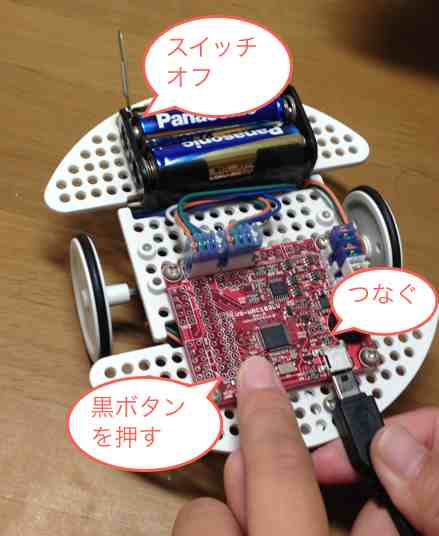
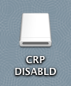

情報処理応用 ー Robocar Programming
バイナリをロボカーに焼く
ビルドがエラーなく終了すると、バイナリが
workspace/robocar/Debug/プロジェクト名.bin に出来上がる。
ビルド時のエラーについては、
LPCXpresso のエラーと警告
を参照のこと。
hkimura Mac で焼く場合
- バイナリ転送を開き、必要ならばログインする。
- バイナリが保存されている場所を入力し、送信ボタンを押す。
- アップロードの画面上に、アップロードしたファイル名を
グループ番号_数字.bin
と表示するので、それをメモ、
ロボカーもって教卓付近に並ぶ。ケーブルはいらない。
- ロボカーのスイッチをオフにし、黒スイッチを押したまま、
USB ケーブルをつなぐ。ケーブルの裏表に注意。

- 接続を確認したら、焼き込みのコマンド、
$ ./burm 00_9598.bin
を入力。00_9598.bin はアップロードの際にメモしたファイル名。
- success が表示されたら、ケーブルを外し、
安全な場所でロボットのスイッチをon。
$ ./burn.sh 00_9598.bin
Volume CRP DISABLD on disk2 unmounted
success.
$
ロボカーはみんなのプログラムに沿って動き出す。
自分 Mac、Windows で焼く場合
- ロボカーのスイッチをオフにし、黒スイッチを押したまま、
USB ケーブルをつなぐ。ケーブルの裏表に注意(上の図参照)。
- ロボカーは CRP DISABLD の名前で USB メモリとしてマウントされる。
下図は MacOSX のものだが、Windows でもほぼ同じ。
ただし、マウントするまで 30 秒弱かかる。

- CRP DISABLD 中のファイル firmware.bin を削除する。
- workspace/robocar/Debug/プロジェクト名.bin を
CRP DISABLD 中にコピー。
- コピーが完了したら、USB メモリを安全な方法で外す。
- ロボカーのスイッチをオン。
焼いてみよう
check.binをダウンロードし、
上記の手順でロボカーに焼いてみよう。
back